Two worlds in one map: every satellite, and the whole solar system.
Orbital tracks ~18,000 objects around Earth live from real orbital data, and lets you fly the solar system — planets, moons, comets, interstellar visitors and the robotic fleet — placed from real JPL ephemerides. This guide walks through everything it can do. It's a free page for family and friends; no accounts, no ads, nothing to install (though you can, see below).
01 · Start here
The basics — one minute
Drag to spin the world · pinch or scroll to zoom · tap anything to learn about it.
Esc (or the on-screen ✕) always steps back one level — out of a close-up, a planet, a view.
The top bar takes you between the worlds: ☉ System (the solar system) and ◐ Moon (the lunar globe). The ? reopens the welcome card.
On a phone, the control desk is behind the ☰ button. On a computer it's the panel on the left, and / jumps to search.
Everything moves in real time — those dots really are up there, right now, where the map says they are.
New here? Take the 🚀 guided tour — the button on the welcome card (the ? reopens it, or share …/orbital/#tour). Twelve narrated stops: the ISS up close, the Starlink shell, why GPS always works, the orbit that stands still, seventy years of launches in twenty seconds, the Moon, Jupiter's dancing moons, Saturn, Pluto's heart, an interstellar visitor, and Voyager 1 — each with the story of what you're seeing.
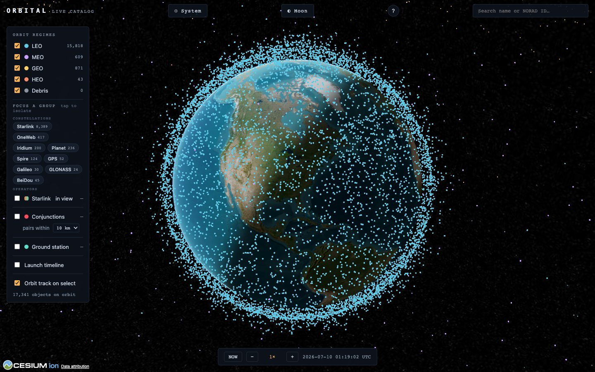
The opening view — every active satellite in the public catalog, live. The colours are orbit families (next section).02 · Around Earth
The live satellite tracker
Each dot is a real object flown from its current tracking data. The colour tells you how high it lives:
LEO — low Earth orbit, a few hundred km up, circling in ~90 minutes. The ISS, Starlink, most of everything.
MEO — medium orbits, where the navigation constellations (GPS, Galileo…) live.
GEO — geostationary, ~35,800 km up, orbiting exactly as fast as Earth turns so they hover over one spot. TV and weather satellites.
HEO — highly-elliptical orbits that swing far out and dive back in.
Debris — tracked fragments from breakups. Untick any of these in the legend to declutter.
Tap a dot (or search a name / NORAD number) to select it: the panel shows live altitude and speed, its orbit draws as a ring, and Orbital follows it. Zoom right in on the famous ones — the ISS, Hubble, Tiangong and a dozen more carry their real NASA 3D models; everything else gets a class-appropriate stand-in.
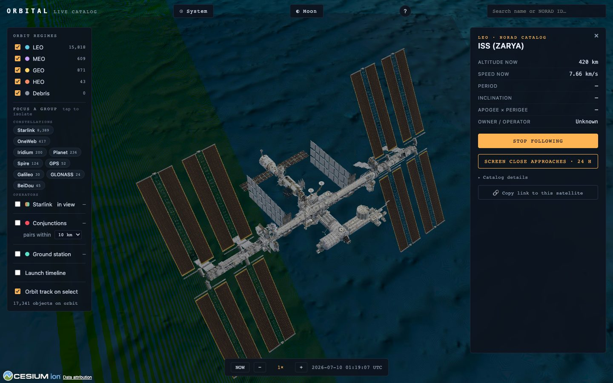
The ISS — the real published model, flying its real orbit at 7.66 km/s. “Stop following” hands the camera back.
Try it: search ISS, then just scroll in. The camera locks on automatically once you're close — a satellite at 7.6 km/s would outrun a free camera in seconds.
03 · Focus
Groups — and who can see the sky
The Focus a group chips isolate one slice of the sky at a time: a constellation (Starlink, OneWeb, Iridium, GPS, Galileo, GLONASS, BeiDou…) or an operator — the USA's, China's, or Russia's whole fleets. Counts are live; tap again to show everything.
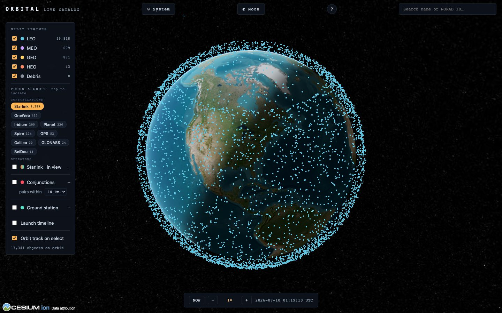
Starlink isolated — 8,000+ satellites in their shells. This link is shareable: the address bar becomes #group=starlink.
“In view” coverage: tick the coverage toggle and Orbital paints, for every point on Earth, how many satellites of the focused group are above the horizon mask right now — computed live from the actual positions. Orange = thin, teal = dense.
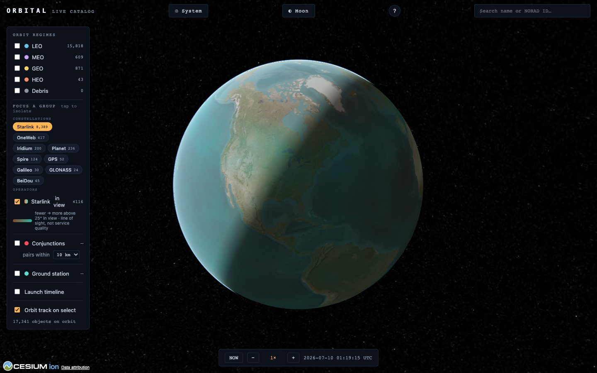
“Starlink in view”: the dense mid-latitude band is where the 53° shells stack up; thinner at the equator and poles.
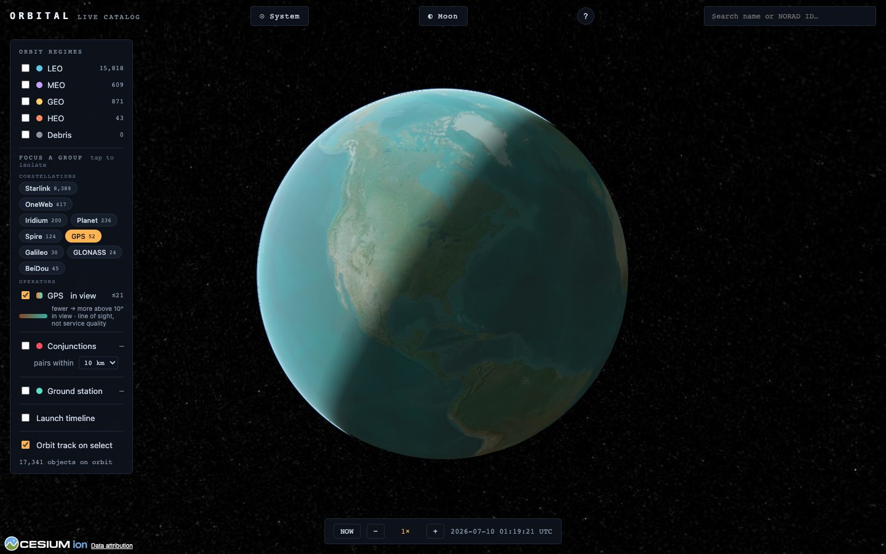
Switch the focus to GPS and the map answers a famous question: a receiver sees several satellites from everywhere — that uniform wash is why GPS works.
Honest label: this is line of sight — how many satellites a dish or receiver could geometrically see — not service quality. Ground stations, licensing and capacity aren't modelled.
04 · Your sky
What flies over your house
In the legend, switch on Ground station, then either 📍 My location or ⌖ Tap map to drop a spot. Orbital sweeps the whole catalog for every pass over that spot in the next 24 hours — when each object rises, how high it climbs, when it sets.
👁 Naked-eye passes — every pass is checked for real visibility: the satellite still in sunlight while your sky is dark. Those are the ones you can walk outside and see; there's a “naked-eye passes only” filter.
Sighting alerts — when the ISS or Tiangong is about to make a visible pass over your station, Orbital pops a countdown with the compass direction it will rise from. Go look up.
The sky chart — a live map of your sky right now: zenith at the centre, horizon at the rim. In a dark sky the sunlit (visible) craft stay bright while shadowed ones dim. Tap a dot on the chart to track it.
Tap a pass row to jump time to that pass and watch it ride over your station.
The “passes ≥ 10°” selector sets how high a pass must climb to count — raise it to 25° or 50° to keep only the good, overhead ones (low passes hug the horizon and hide behind buildings).
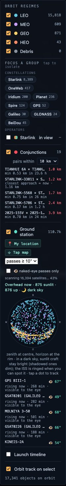
The control desk with a station set — upcoming passes (👁 = visible to the eye) and the live overhead sky chart.
Your spot is remembered on your device (nothing is uploaded anywhere), so the passes and sky chart come straight back on your next visit.
05 · Traffic
Conjunctions — orbital near-misses
Tick Conjunctions and Orbital continuously finds every pair of tracked objects passing within 5, 10 or 25 km of each other — the everyday near-misses of an increasingly crowded sky. Click a row to fly to the encounter; the subline forecasts the moment of closest approach over the next day.
For any selected satellite, “Screen close approaches” runs the same search the other way: everything that will come near that one craft in the next 24 hours, closest first.
06 · History
Replay the Space Age
Switch on the Launch timeline and drag the year slider — the sky rebuilds to show only what had launched by then. Press ▶ and watch seven decades unfold: Sputnik alone in 1957, the Cold War build-up, GPS arriving, and the Starlink explosion after 2019. Milestones flash as the play-head crosses them.
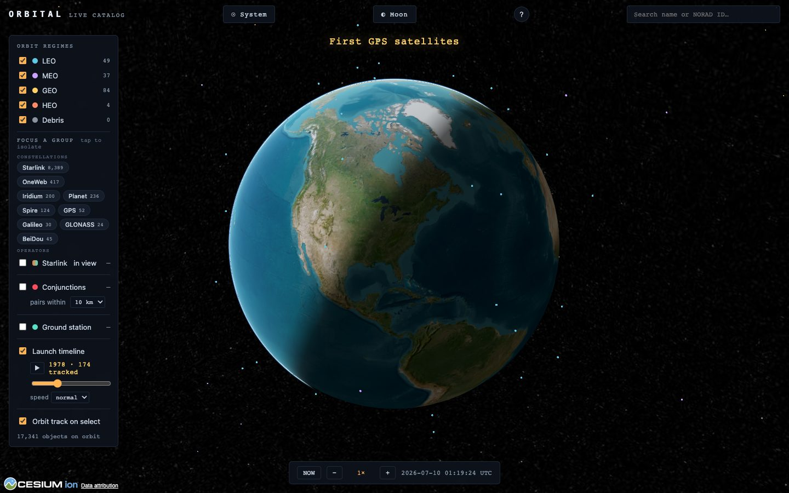
1978: a few hundred objects. Scrub to today and it's ~18,000 — most of the difference is the last five years.07 · Out there
Fly the solar system
☉ System leaves Earth for a Sun's-eye view: all eight planets on their real orbits, the five dwarf planets, famous comets, the three known interstellar visitors, the asteroid belt with its named families, Jupiter's Trojan clouds — and an accurate star sky behind it all. Tap anything to fly to it.
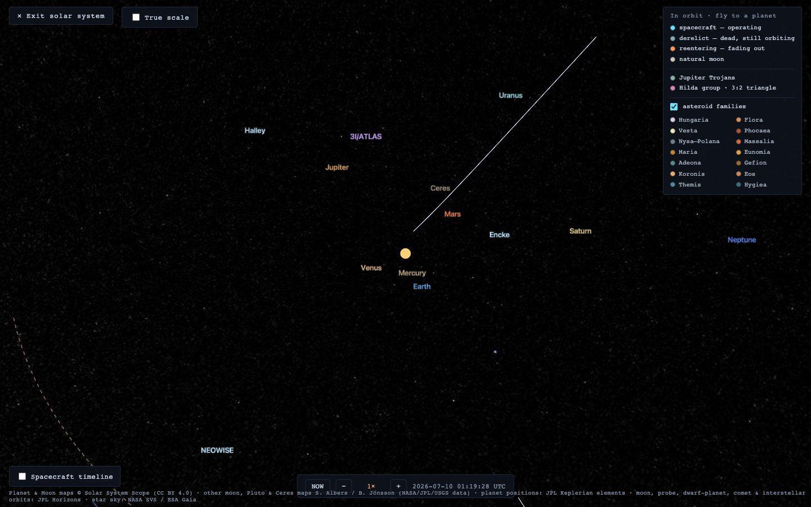
The overview. Spacing is “readable” by default — flip True scale to see how empty space really is.
The positions are real. Planets, moons, dwarf planets, comets and probes are placed from JPL data — this is where everything actually is today, not decoration.
Moons dance in their true configuration — the Galilean moons around Jupiter, Triton circling Neptune backwards, Iapetus tilted out of Saturn's plane.
Comets & interstellar visitors: Halley's backwards 76-year loop, Hale-Bopp's near-vertical dive — and ʻOumuamua, Borisov and 3I/ATLAS on open violet arcs, because they're not in orbit at all: they fell in from interstellar space and are leaving forever.
The robotic fleet: every orbiter humanity has sent to another planet, in cyan, each holding a purposeful nadir-locked attitude. The Spacecraft timeline (bottom-left) replays their arrivals from 1970 on — watch the Mars fleet assemble.
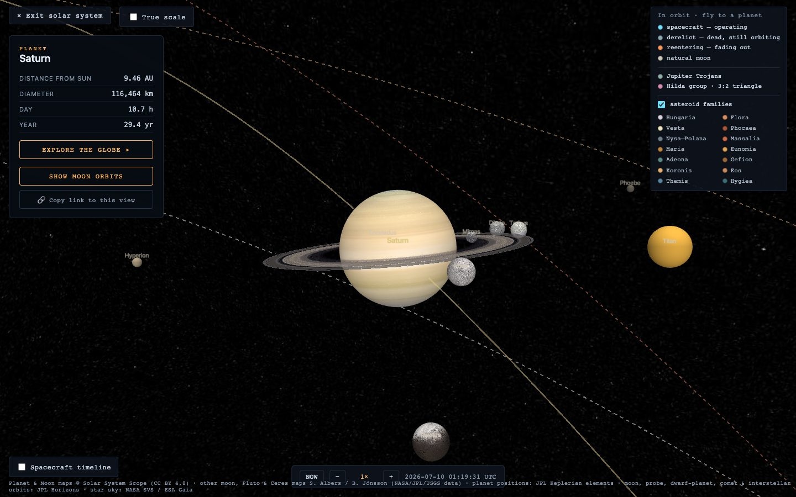
Saturn — the rings wear their real tilt, and “Show moon orbits” reveals the family, Mimas out to Phoebe orbiting backwards.
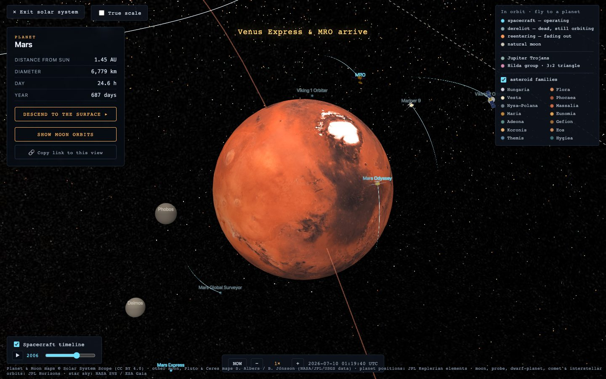
Mars, 2006, on the spacecraft timeline — Global Surveyor's era ending just as MRO arrives. Orange craft are re-entering; dim ones are derelicts.
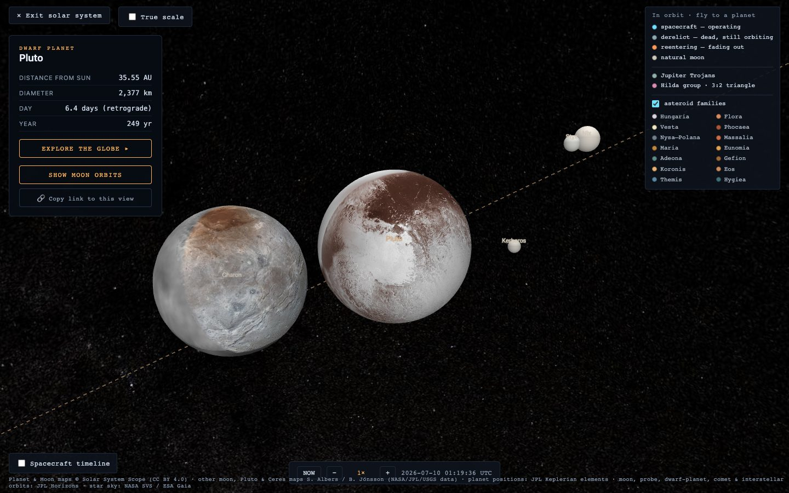
Pluto & Charon — a true binary, with the real New Horizons maps. The heart is right where it should be.08 · Boots down
Land on other worlds
◐ Moon opens the lunar globe — real NASA imagery you can explore from orbit down to the footpaths of the Apollo sites' neighbourhoods. In the system view, most planets (and Pluto and Ceres) can be entered the same way from their panel: Mars streams down to ~25 m/px, Ceres wears its real Dawn mosaic.
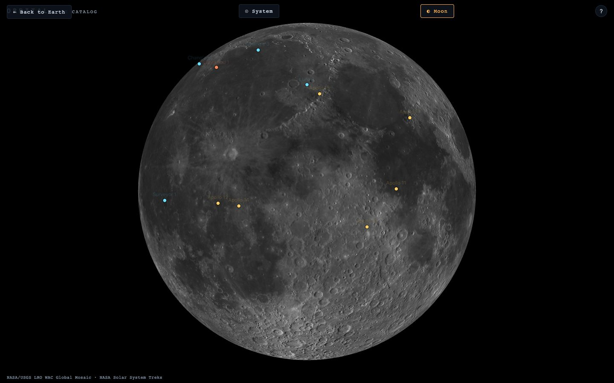
The lunar globe. Esc (or ✕) climbs back out to wherever you came from.09 · The famous ones
Showpieces beyond Earth orbit
Some celebrated spacecraft never appear in the tracker because they don't orbit Earth. Search for them and fly out: James Webb at L2, SOHO, DSCOVR and ACE at L1 — and the deep-space legends: Voyager 1 & 2, Pioneer 10, New Horizons, each shown in its true direction with its real distance on the card (billions of km — far too far to draw to scale).
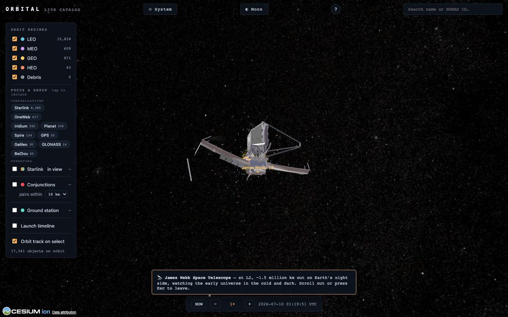
James Webb, ~1.5 million km out on Earth's night side. Scroll out or press Esc to come home.10 · The clock
Time travel
The bar at the bottom is the simulation clock. − / + steps the speed from 1× (real time) up to 7200× — two hours per second, fast enough to watch whole constellations swirl and the Galilean moons lap Jupiter. NOW snaps back to the present at 1×.
The honesty badge: orbital predictions age. If you warp days ahead (or the data is old), an amber badge appears warning that positions are extrapolated — the further from “now”, the fuzzier the truth.
11 · Send it
Sharing what you find
The address bar tracks what you're looking at — copy it (every panel has a Copy link button) and whoever opens it lands on the same thing. A field guide to the links:
Link ends with
Opens
#sat=25544
a satellite, tracked live (by NORAD number — that one's the ISS)
#group=starlink
the Earth view focused on a group
#system
the solar-system overview
#body=Saturn
flying over a planet, dwarf planet or comet
#moon=Europa · #probe=Juno
a natural moon, or a spacecraft at its planet
#luna
the Moon globe
#jwst, #voyager1, …
a showpiece, up close
12 · Keep it
Install it as an app
Android / Chrome: the welcome card offers 📲 Install Orbital (or use the browser menu → “Install app”). It opens full-screen with its own icon, and repeat launches are fast.
iPhone / iPad: in Safari, tap Share → Add to Home Screen. Same thing — Apple just hides the button.
Orbital stays online-first either way: the live orbits always come fresh from the tracking feed.
13 · The fine print
How real is all this?
Very — with a few honest cheats, all in the name of legibility:
Satellites fly their current public element sets (CelesTrak), propagated with the standard SGP4 model — the same math ground stations use. Fresh data is fetched every couple of hours.
Planets ride JPL's Keplerian elements; moons, dwarf planets, comets, interstellar visitors and probes carry real osculating elements from JPL Horizons, validated against JPL's own positions by an automated test suite. The major moons land within about a degree of the truth.
The cheats: planet sizes and moon spacings are exaggerated by default so things are visible (flip True scale for reality); probe orbits keep their real tilt and shape-character but are gently eased to stay in frame; the system view is lit for viewing, so day/night lines out there aren't physical; and which side of a planet faces you at a given hour is illustrative (the spin rate and axis are real).